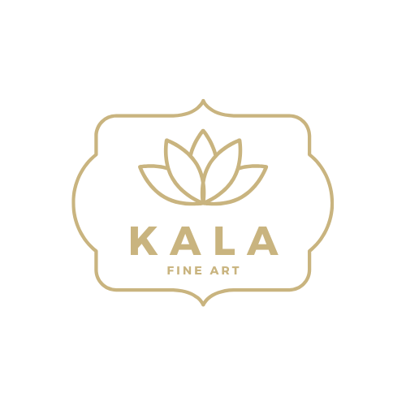
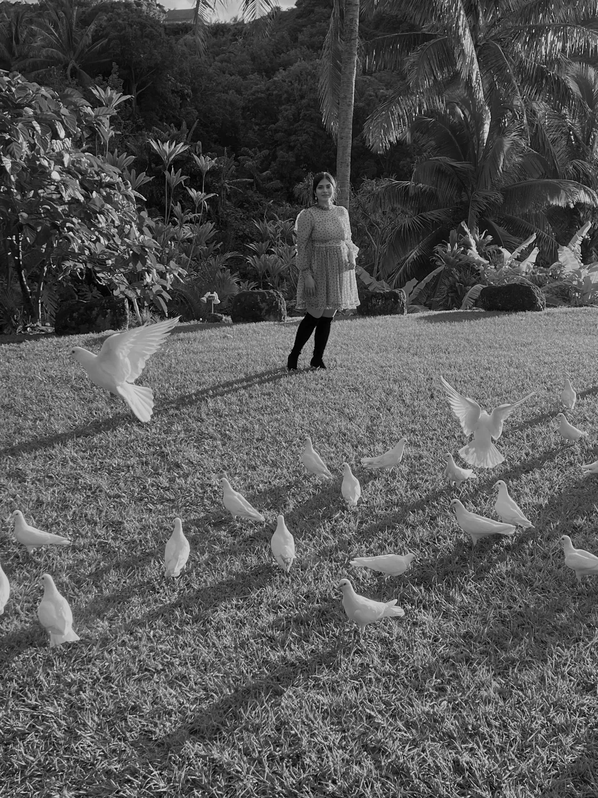
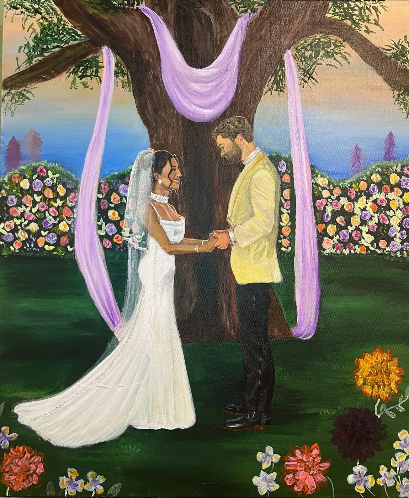
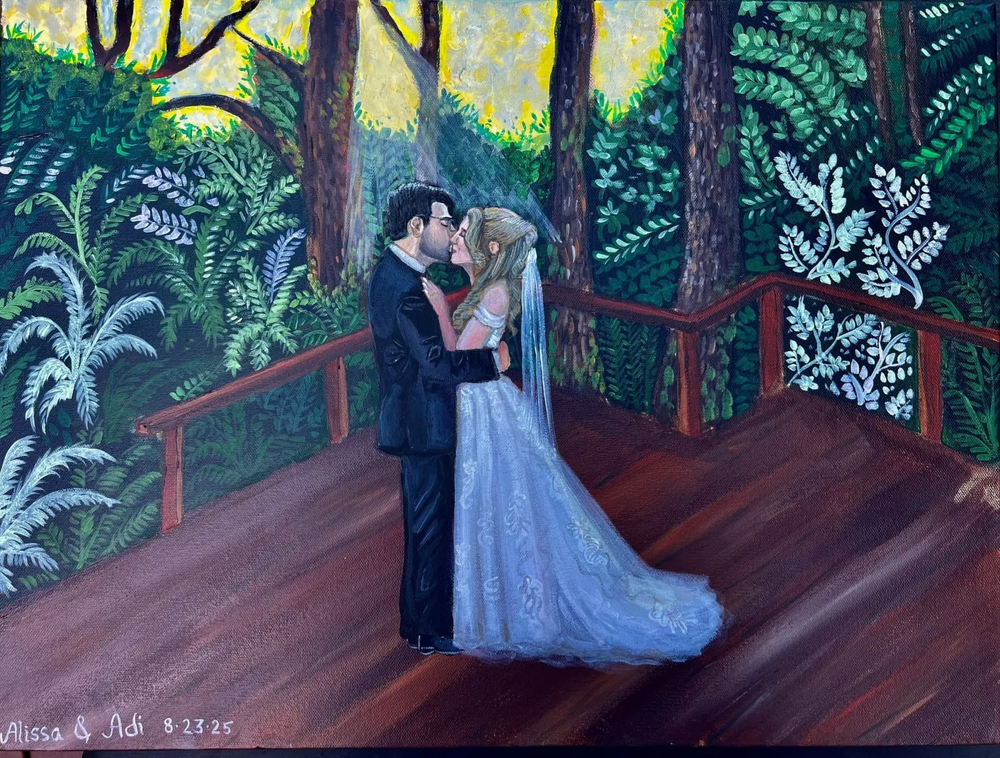
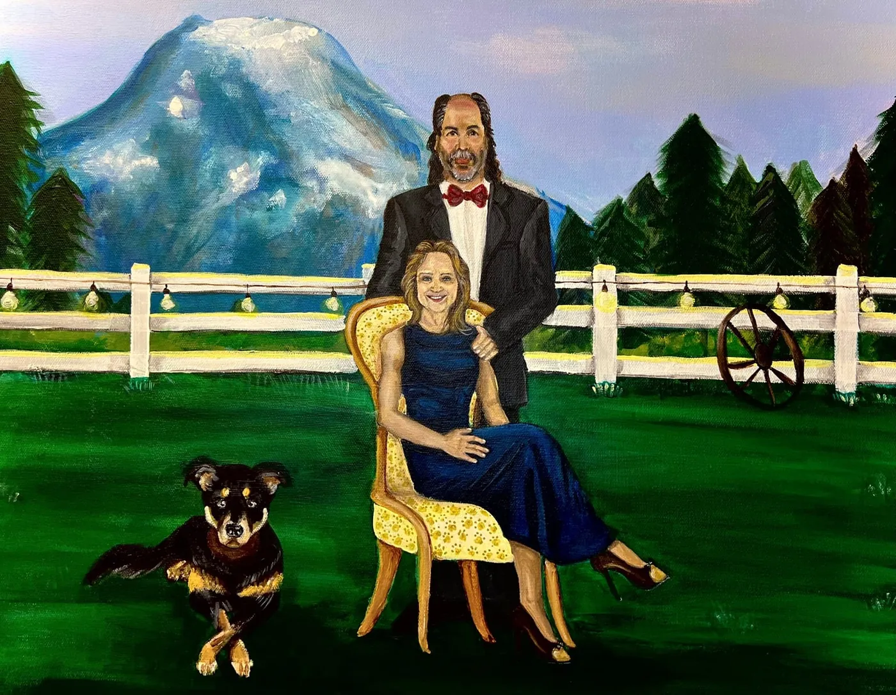
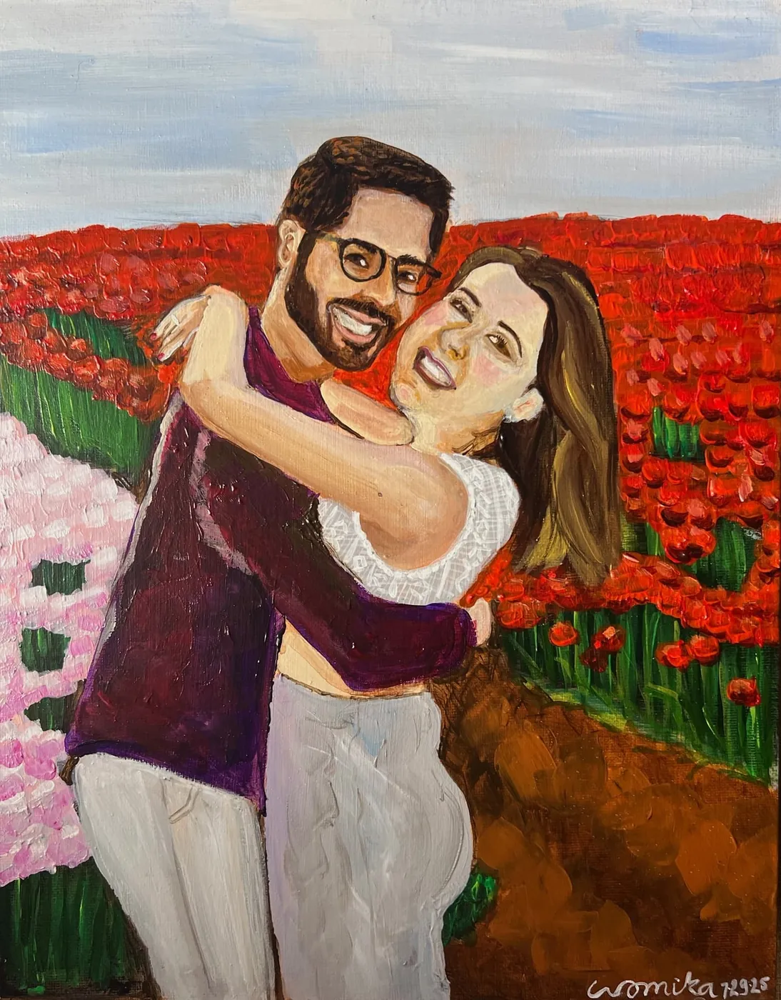
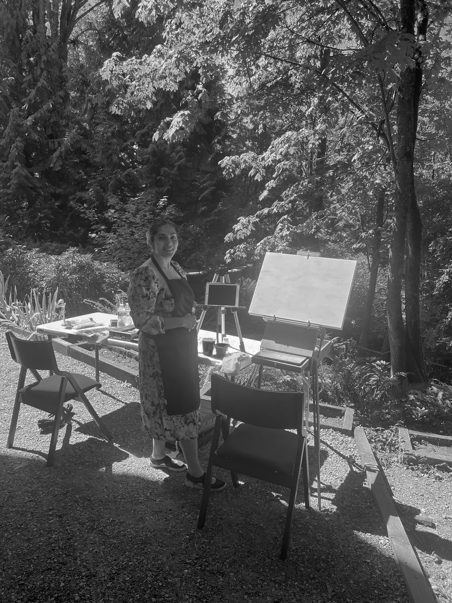

Live Wedding Painting& Guest Portraits

About me
Hello, I’m Wamika Bansal — a live wedding painter who transforms your most meaningful moments into timeless works of art.
Based in the Seattle area and serving couples across Washington and worldwide, I create romantic, fine art keepsakes painted on-site during your celebration. My paintings beautifully complement your wedding photos and film, becoming heirlooms you’ll treasure for a lifetime.
What sets my work apart is the intimacy I bring to each piece. I capture not just the big moments but also the subtle details — from the bouquet your grandmother grew to the glow of golden hour. I also hide thoughtful “easter eggs” within the artwork, secret touches only the couple knows to look for, making every painting uniquely personal.


Second: Mercer Island, WA


Where I Paint
I’m a Seattle-area live wedding painter, and I bring my easel to venues all over Washington. Here are a few favorite places I paint:
Seattle & the Eastside
Seattle · Bellevue · Kirkland · Redmond · Mercer Island · Woodinville · and nearby
Greater Puget Sound
Tacoma · Everett · Snohomish · Gig Harbor · Bainbridge Island · and nearby
Washington Getaways
Leavenworth · San Juan Islands · Skagit Valley · Mount Rainier · Lake Chelan · and more
Travel is free within 50 miles of Seattle. Planning a wedding farther away? I travel worldwide. Travel fees may apply depending on the distance.
Frequently Asked Questions
Do you travel for weddings?
Yes! I’m based in the Seattle area and paint weddings all over Washington. Travel is free within 50 miles of Seattle. I also travel worldwide; travel fees may apply depending on the distance.
What space do you need to paint?
I require a minimum 5 ft x 5 ft space with ample lighting and cover to ensure the best painting experience.
Can you include more than just the couple?
Absolutely. I can incorporate family members, wedding party, or even pets into the painting. Additional fees apply depending on the number of subjects.
Can I book live painting and guest portraits for the same event?
Yes! For multi-day celebrations, such as a sangeet or mehendi followed by the wedding, I can paint both myself on different days. For a single event, I bring a second artist so your live painting and guest portraits happen side by side.
Do you paint other events or from photos?
Yes, I love capturing all types of celebrations beyond weddings. I can also create a painting after the event using professional photos.
